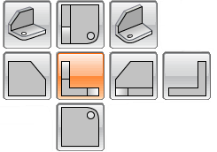
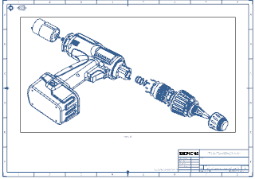
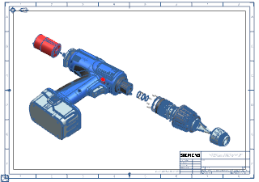
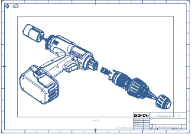

In the Layout group, make sure the only view button selected is Parent View.

Under Placement, make sure Option is set to Automatic.

Expand the Margins group, and then select the Ignore Title Blocks check box.

The view boundary now expands over the area of the title block.
Under Margins, type the following values:
|
Between Views |
= |
5 |
|
To Border |
= |
50 |
Press Enter.
The view boundary adjusts to the new values.
Click Finish.

Sheet “Sheet 1” Work